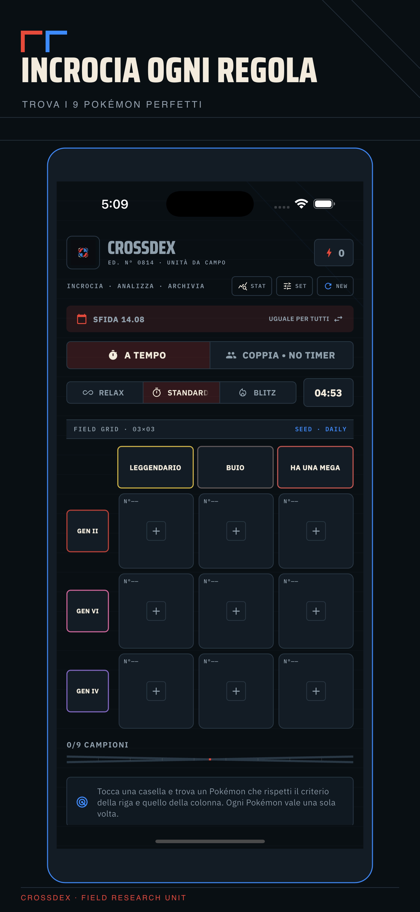
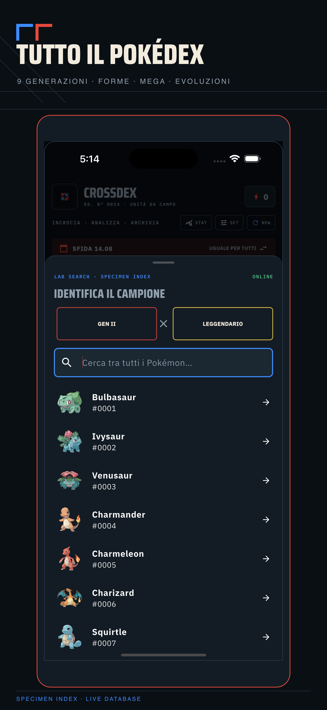
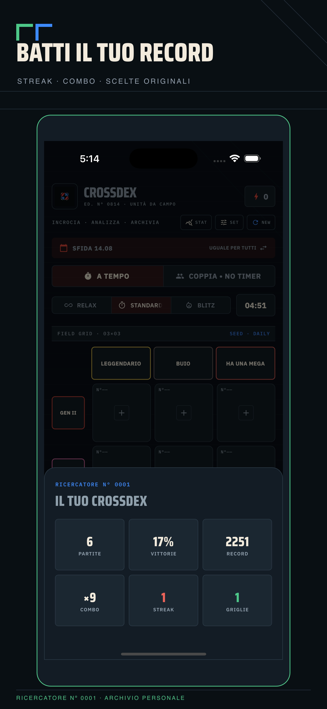

Sfida giornaliera
Una griglia deterministica nuova ogni giorno, con streak e statistiche salvate.
Nove caselle, criteri che si incrociano e l’intero mondo Pokémon da esplorare. Trova la specie giusta per ogni combinazione e chiudi la griglia.
Una Pokédex essenziale e reattiva: cerca, confronta i criteri e costruisci la risposta perfetta casella dopo casella.



Una griglia deterministica nuova ogni giorno, con streak e statistiche salvate.
Relax, Standard e Blitz: scegli il ritmo e affronta il timer.
Griglie casuali per conoscere meglio tipi, generazioni, evoluzioni e rarità.
Gioca insieme sullo stesso dispositivo, senza account e senza matchmaking.
Il catalogo consultato resta disponibile sul dispositivo per sessioni più rapide.
Interfaccia completa in italiano e inglese, con audio e feedback aptico regolabili.